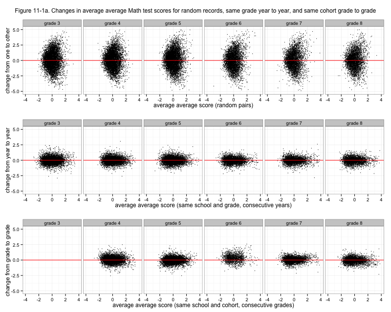
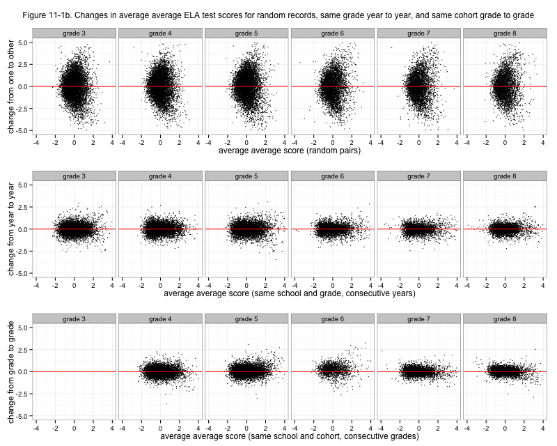
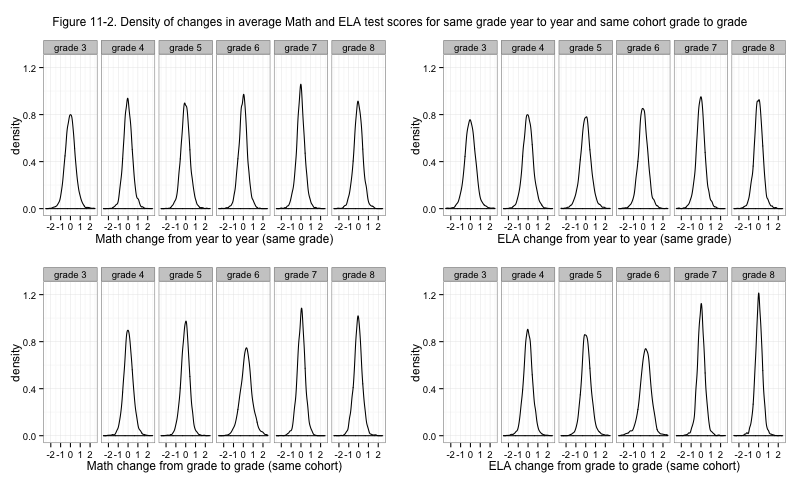

NYC standardized test results: Changes in average scores for school grades and cohorts
Tuesday November 19, 2013
I've normalized and re-normalized these average scores so that I can compare the scores across years and across grades. Now, there are good reasons not to do this. The tests aren't vertically aligned. The fourth-grade test in math could be on different material than the third-grade test, etc. I don't have student level information, so I don't know which students are really in these averages. Tests are evil. And so on, etc., etc. I'm going to do it anyway, and hopefully I'll be sufficiently critical of any results.
I suspect that, as was mostly the case for the number of students tested, test performance will vary more at the same school and same grade from one year to the next (4th grade 2008 to 4th grade 2009) than at the same school and same cohort from one year to the next (4th grade 2008 to 5th grade 2009). This would indicate that the test measurement error (at the school grade level, for this data) is smaller than the variability of classes at schools. If this is the case then there's some hope for using these averages to try to get a sense of how well schools are educating their students. If not, then we'll have less confidence about many things.
Well, here's the result:
[caption id="attachment_612" align="aligncenter" width="525"] Figure 11-1a. Changes in average average Math test scores for random records, same grade year to year, and same cohort grade to grade[/caption]
{kind=link}
That's a little disappointing. Cohort doesn't look appreciably stabler than grade, if at all. Going into sixth grade, the distribution isn't even centered at zero! Of course we only see schools that have fifth and sixth grades there, which isn't as many schools. But what's causing that? Do those schools have an influx of smart middle-schoolers who weren't in their fifth grades? That seems unlikely. Is it a result of how students move around system-wide between fifth and sixth grades? Is it an artifact of my chosen normalizing method? Curious. Here's the same graph for ELA.
[caption id="attachment_613" align="aligncenter" width="525"] Figure 11-1b. Changes in average average ELA test scores for random records, same grade year to year, and same cohort grade to grade[/caption]
{kind=link}
Okay actually, before moving on, here's one more look at changes by grade. I really wanted them to be stabler for cohorts. The density plots below could help deal with overplotting issues, but the conclusion is about the same. Cohorts are particularly strange going from fifth to sixth grade. For ELA, cohort scores might be a little stabler going into seventh and eighth grades, but it doesn't make me particularly thrilled.
[caption id="attachment_616" align="aligncenter" width="525"] Figure 11-2. Density of changes in average Math and ELA test scores for same grade year to year and same cohort grade to grade[/caption]
{kind=link}
I can't think of a way for the above to be a good result for anybody, aside from finding something interestingly weird about fifth-to-sixth-grade cohorts.
[table of contents for this series]
This post was originally hosted elsewhere.